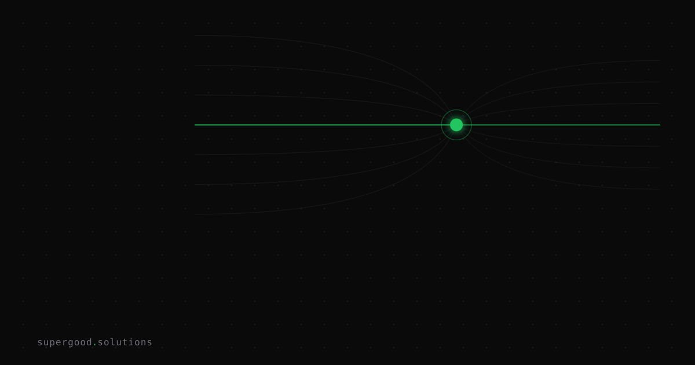

Your AI Implementation Is Actually a Workflow Redesign
TL;DR: You budgeted for a software subscription and you are going to get a three-quarter change project. The model is the cheap part, and it creates no value until the process around it changes.
Key Insight
When McKinsey tested 25 organizational attributes against gen AI results, redesigning workflows had the biggest effect on whether a company saw EBIT impact, not model choice, vendor, or prompt quality. Its 2026 follow-up says the same thing from the other side: high performers fundamentally redesign workflows rather than layer AI onto existing ones.
That should change how you plan. A model is a component. It does nothing for the business until some person or system hands it the right input at the right moment, and some other person or system acts on what comes out. Those handoffs are the workflow, and in most companies nobody has drawn them since the last reorg.
The pro-AI reading of this is simple. The technology is good enough. The bottleneck moved to the org chart.
Why Teams Miss This
The purchase looks like software. There is a vendor, a per-seat price, a security review, and a rollout date. So it gets budgeted like software: license cost, a few weeks of integration, a training session. Then the pilot ships and adoption is polite but flat.
Here is a composite example from the kind of deployment we see often. A support team adds an AI drafting assistant to its ticket tool. Agents get a suggested reply on every ticket. Handle time barely moves. Why? The review step still requires a senior agent to approve every reply, the escalation rules were written for human drafts, and the QA scorecard still grades agents on how much they typed. The assistant is fast. The process around it is the same speed as before.
MIT's NANDA report on enterprise pilots (300+ initiatives reviewed, 52 organizations interviewed) points at the same pattern. It names a learning gap as the main reason pilots stall: tools that do not learn, integrate poorly, or fit the actual workflow. Treat the headline failure rate with some caution, since the study was preliminary and its sample is not a census. The mechanism it describes is still the one you can check in your own pilots.
Three habits make this worse:
- Funding the tool, not the change. The budget line has a license and an integration estimate. It has no line for process mapping, role changes, or retraining.
- Measuring usage instead of throughput. Logins and prompts per week go up while cycle time stays put.
- Automating the existing steps. If a step existed only because a human could not do the work in parallel, it probably should not survive.
How to Actually Do It
Plan it as a change project with a model inside it. A rough shape that holds up:
- Pick one workflow, not one team. Choose a process with a clear start, a clear end, and a number attached, such as time from ticket opened to ticket resolved, or days from invoice received to invoice paid.
- Map the current steps with the people who do them. Include the unofficial steps. Mark every handoff and every approval.
- Decide what the model owns. For each step, say whether the model decides, drafts, or only flags. Write down what happens when it is wrong.
- Delete or merge steps before you automate them. Ask which approvals exist because of risk and which exist because of habit.
- Change the incentives and the scorecard. If people are graded on the old behavior, they will keep doing the old behavior.
- Instrument the whole workflow. Track cycle time, rework rate, and escalation rate, not just model calls.
A simple plan file helps keep the scope honest. Something like this works:
{
"workflow": "invoice-intake-to-payment",
"baseline": { "cycle_days": 11, "rework_rate": 0.18 },
"model_role": "extract fields and flag mismatches",
"removed_steps": ["manual re-keying", "second approval under $2,000"],
"owner": "ap-operations-lead",
"review_at_days": [30, 60, 90]
}The numbers above are placeholders. The point is that the baseline, the owner, and the removed steps are written down before launch.
For budgeting, expect the quarters to look like this. The first covers mapping, baselining, and a narrow build. The second covers running the new process in parallel with the old one and fixing what breaks. The third covers cutting over, retiring the old steps, and changing how people are measured. A pilot can show a result earlier, but a workflow that people trust takes about that long.
What We've Learned
Before your next AI purchase, ask for two things in the proposal: a named workflow with a baseline number, and a list of steps that will be removed. If the proposal has neither, you are buying a subscription and hoping.
A good experiment for this month: take one process you already pointed an AI tool at, draw its real steps on a whiteboard, and circle every step that exists only because of how work used to be done. Then remove one circled step and measure cycle time for two weeks. That single change usually tells you more than another round of prompt tuning.
Sources
- McKinsey, The State of AI: How organizations are rewiring to capture value: mckinsey.com/capabilities/quantumblack/our-insights/the-state-of-ai-how-organizations-are-rewiring-to-capture-value
- McKinsey, The state of AI in 2026: On the road to ROI (PDF): The state of AI in 2026
- MIT NANDA, The GenAI Divide: State of AI in Business 2025 (PDF): The GenAI Divide report
- Summary of the NANDA sample size and findings: letsdatascience.com coverage of the MIT report
Have a specific workflow in mind?
The fit check comes first. It takes about 2 minutes. If it's a fit, Ryan follows up to schedule the paid Quick Scan ($1,000): a live working session where we'll tell you honestly whether it should be an agent, a workflow, or left alone, before you spend a dollar building it. You get 3 prioritized recommendations on the call, a one-page summary after, and the fee is credited toward a build if you sign within 14 days.
Get new posts + practical agent-ops notes
One email when something new goes up. No nurture sequence, no spam — unsubscribe whenever you want.